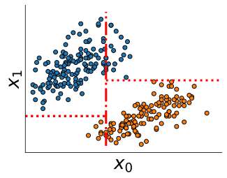
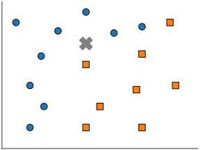

class: titlepage .header[MOOC Machine learning with scikit-learn] # Decisions trees This lesson covers decision tree and random forest. These are robust models for both rergession and classification. <img src="../scikit-learn-logo.svg"> ??? Decision tree are built as a set of rules for both classification and regression problems. These are the building blocks for more ellaborate model such as random forest and gradient boosting trees, as we will see. --- # Outline * What is a decision tree? * For classification & rergession * Boosting and Bagging --- # Example .shift-left[<img src="../figures/tree_example.svg" width="80%">] ??? A decision tree is a set of rules, combined in a hierarchical manner. In this example, if a new point have to be classified : - we will first check the age feature, if it is lower than 28.5, we shall classified it as "low income". - Otherwise, depending of the hours per week feature, we will classified it as low or high income. --- # Classification .pull-left.shift-left[<img src="../figures/tree2D_1split.svg" width="100%">] .pull-right[<img src="../figures/tree_blue_orange1.svg" width="100%">] ??? Each split shall maximize the "information gain". That will be define precisely in the following notebook. --- # Classification .pull-left.shift-left[<img src="../figures/tree2D_2split.svg" width="100%">] .pull-right[<img src="../figures/tree_blue_orange2.svg" width="100%">] ??? We can incrementaly expand any leaf to refine the decision function. At each step, the leaf focuses on a smaller subregion of the space. --- # Classification .pull-left.shift-left[] .pull-right[<img src="../figures/tree_blue_orange3.svg" width="100%">] ??? In this example, after two split, we obtain pure leaf. i.e. in each leaf, there is only one class. The max depth here is then egal to 2. We do not need to go deeper. --- # Regression <img src="../figures/tree_regression1.svg" width="100%"> ??? Decision tree can also fit regression problem. --- # Regression <img src="../figures/tree_regression2.svg" width="100%"> ??? It will arrange the split w.r.t. the value of *x*. Without making any assumption on any distribution. It is a non-parametric model. --- # Regression <img src="../figures/tree_regression3.svg" width="100%"> ??? But it can also overfit. Controling the depth here allow to control the overfit. --- # Boosting .pull-left[<img src="../figures/boosting0.svg" width="100%">] ??? Here we have a classification task. Seprating red circle from blue square. --- # Boosting .pull-left[<img src="../figures/boosting1.svg" width="100%">] .pull-right[<img src="../figures/boosting_trees1.svg" width="100%">] ??? A first shalow tree start to separate circle from square. Mistakes done by this first tree model shall be corrected by a second tree model. --- # Boosting .pull-left[<img src="../figures/boosting2.svg" width="100%">] .pull-right[<img src="../figures/boosting_trees2.svg" width="100%">] ??? So now, the second tree refine the first tree. The final model is a weighted sum of this first two trees. --- # Boosting .pull-left[<img src="../figures/boosting3.svg" width="100%">] .pull-right[<img src="../figures/boosting_trees3.svg" width="100%">] ??? We could continue to refining our ensemble model. At each step we focus on mistakes of the previous model. --- # Bagging .pull-left[<img src="../figures/bagging0.svg" width="100%">] .pull-right[<img src="../figures/bagging.svg" width="120%">] ??? In bagging, on contrary to boosting, we will construct deep tree in parallel. --- # Bagging .pull-left[<img src="../figures/bagging0.svg" width="100%">] .pull-right[<img src="../figures/bagging_line.svg" width="120%">] .pull-right[<img src="../figures/bagging_trees.svg" width="120%">] ??? Each tree will be fitted on an sub-sampling from the initial data. i.e. we will only consider a random part of the data to build each model. --- # Bagging .pull-left[] .pull-right[<img src="../figures/bagging_cross.svg" width="120%">] .pull-right[<img src="../figures/bagging_trees_predict.svg" width="120%">] .pull-right[<img src="../figures/bagging_vote.svg" width="120%">] ??? When we have to classify a new point, we will agregate the prediction of every model by a voting scheme. --- # Take away * `max_depth` parameter can prevent overfiting * `Random Forest` use bagging over decision trees * `boosting` fit sequentialy shallow trees * `bagging` fit simultaneously deep trees